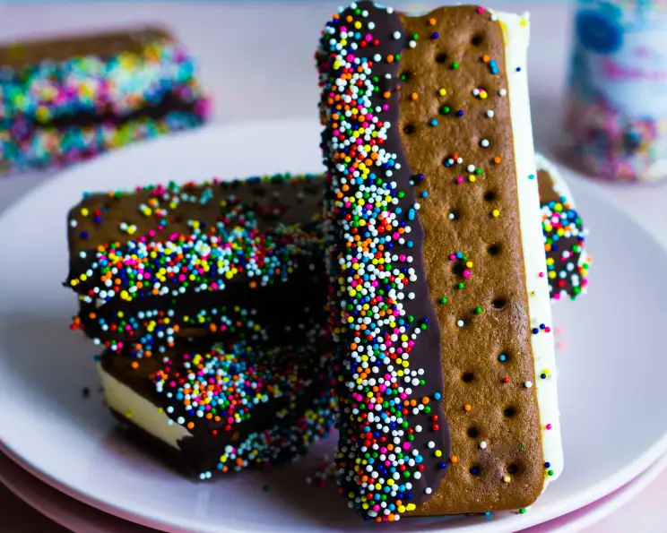

Dipped Ice Cream Sandwich

The finale is here!
Who doesn't love an ice cream sandwich? That would be good enough, right? Well you're going to step it up!
A simple dip in chocolate and some sprinkles will add some extra goodness to this already perfect dessert.
And we still don't need any silverware!
Ingredients
- 6 semi-sweet chocolate baking squares, chopped
- 1 tablespoon shortening
- 4 ice cream sandwiches
- colorful candy sprinkles
Instructions
- Line a baking sheet with waxed paper; set aside.
- In a microwave or heavy saucepan, melt the chocolate and shortening together and stir until smooth.
- Quickly dip the ice cream sandwiches halfway lengthwise in melted chocolate; coat chocolate with sprinkles.
- Place on prepared baking sheet and freeze.